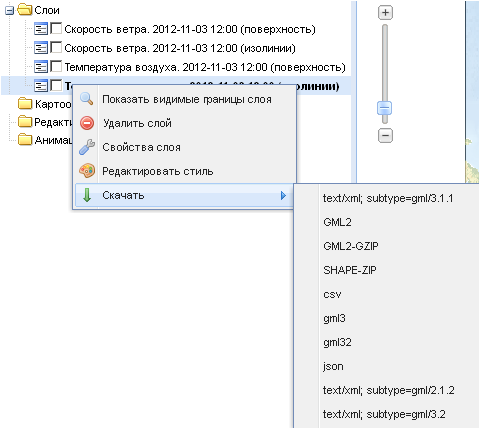

Контекстные меню слоев
Вложениями всех папок закладки Слои можно управлять с помощью контекстных меню, вызываемых нажатием правой кнопки мыши на названии тематического или редактируемого слоя, картоосновы или стэка анимации.
Контекстное меню максимально имеет пять команд, однако для разного типа слоев, картооснов и стеков анимации набор доступных команд будет различным.

Команда Показать видимые границы слоя используется для отображения в рабочем окне карты всего слоя полностью, если в видимой области отражена только его часть.